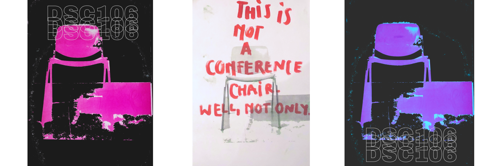

>A project centered around DSC106, a conference chair designed by Giancarlo Piretti in 1965 for Castelli.
>The chair becomes a brand, it becomes something it was originally not.
>It embraces its existence as it takes the shape of life around it.
>(posters realized with mixed media - riso print, marker, digital photography)
